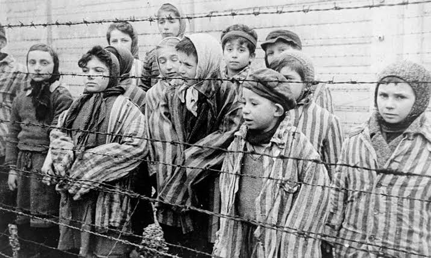
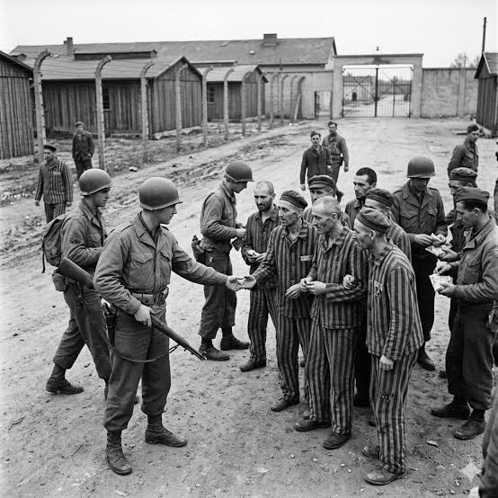

The Holocaust: Systematic Persecution and Genocide
The Holocaust was the state-sponsored, systematic persecution and murder of six million European Jews by Nazi Germany and its collaborators during World War II, alongside the targeted persecution and mass murder of other groups.

Escalation from Exclusion to Mass Murder
After 1933—and intensifying sharply after the 1939 invasion of Poland—Nazi policies stripped Jews of legal rights, property, and freedom through decrees, violence, and forced ghettos.
Following the 1941 invasion of the Soviet Union, mobile killing squads (Einsatzgruppen) and auxiliary units carried out mass shootings across Eastern Europe.

Extermination Camps and the Industrialized 'Final Solution'
Through the 'Final Solution,' Nazi leadership expanded deportation networks and established extermination centers such as Auschwitz-Birkenau, Treblinka, Sobibor, Belzec, Chelmno, and Majdanek.
Millions of Jewish men, women, and children were murdered, while Roma and Sinti, people with disabilities, Soviet prisoners of war, Poles, Jehovah's Witnesses, and others were also persecuted or killed.

Resistance, Liberation, and Historical Memory
Despite overwhelming odds, victims resisted through armed uprisings—such as the Warsaw Ghetto Uprising—as well as clandestine schooling, cultural preservation, and survival networks.
As Allied forces liberated camps in 1944 and 1945, survivor accounts, trials, and memorials became central to preserving historical truth.